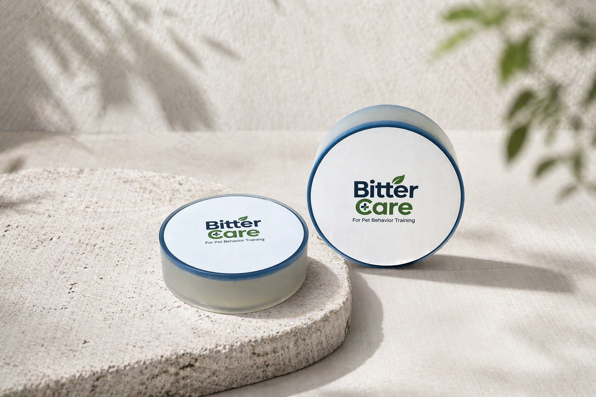

Nguyên liệu là gì?
Thành phần tạo vị đắng là denatonium benzoate. BitterCare sử dụng nguyên liệu tạo vị đắng cao cấp từ Anh.
Sử dụng nguyên liệu tạo vị đắng cao cấp từ Anh.
Tìm hiểu vai trò của vị đắng và cách dùng BitterCare tại nhà.

BitterCare tạo vị đắng trên bề mặt đồ dùng để hỗ trợ quản lý hành vi ngậm, cắn lặp lại.
Thành phần tạo vị đắng là denatonium benzoate. BitterCare sử dụng nguyên liệu tạo vị đắng cao cấp từ Anh.
Cún có thể phản ứng với vị đắng khi tự nhiên tiếp xúc với bề mặt đã dán. Vị trí và độ bám sát rất quan trọng.
Độ nhạy vị giác và thói quen khác nhau. Ngừng dùng nếu cún xé miếng dán; kết hợp đồ nhai thay thế và quản lý môi trường.
“Từ Anh” nói về nguồn gốc nguyên liệu tạo vị đắng, không phải nơi sản xuất thành phẩm. Sản phẩm không ăn được. Không chủ động cho nếm hoặc dán lên cơ thể.
Denatonium benzoate có vị cực kỳ đắng. Thông tin chung về nguyên liệu có tại hướng dẫn nguyên liệu của Bitrex. Đây không phải chứng nhận hay bảo đảm cho thành phẩm BitterCare.
Những điều cần làm trước khi mong đợi kết quả.
Chỉ dán lên bề mặt đồ dùng thường bị ngậm hoặc cắn, như đồ nội thất, khung cửa hoặc vùng bảo vệ dây điện.
Phản ứng tùy từng cún. Quan sát hành vi và điểm tiếp xúc khi mới sử dụng.
Thử ở vùng nhỏ trước với lớp phủ nhạy cảm, da hoặc gỗ tự nhiên.
Chọn đúng vị trí miệng cún thực sự tiếp xúc.
Cạnh đồ nội thất · Khung cửa · Chân bàn/ghế · Vùng bảo vệ dây điện · Bề mặt đồ dùng thường bị cắn hoặc liếm
Da · Lông · Đệm chân · Bát đĩa · Đồ ăn · Đồ chơi cho vào miệng · Nơi trẻ nhỏ thường chạm vào
Phản ứng phụ thuộc vào độ nhạy vị giác, thói quen cắn, điểm tiếp xúc và môi trường. Nếu phản ứng yếu, kiểm tra vị trí và độ bám trước. Không chủ động cho cún nếm.
Những câu hỏi thường gặp trước lần đầu sử dụng.
Không. Không dùng trên da, lông hay đệm chân. Sản phẩm chỉ dành cho bề mặt đồ dùng.
Không chủ động cho nếm. Dán lên bề mặt thường bị cắn để cún tiếp xúc tự nhiên.
Tùy chất liệu, có thể xuất hiện vết keo hoặc thay đổi bề mặt. Hãy thử trước ở vùng nhỏ.
Kiểm tra điểm tiếp xúc và độ bám. Thay miếng dán khi bụi bẩn hoặc việc sử dụng lặp lại khiến cần thay mới.
BitterCare không có chức năng cách điện hay chống điện giật. Không dùng trên dây hỏng. Để dây ngoài tầm với và rút điện trước khi dán.
Bạn có câu hỏi về vị trí dán hoặc sản phẩm? Hãy mô tả tình huống, chúng tôi sẽ xem xét và trả lời qua email.